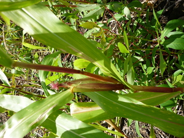
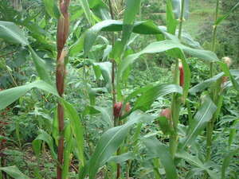

salulu  
/salulu/
v_rt.
v.
for someone (especially a mother) (egsalulu, migsalulu/insalulu/pigsalulu, agent, eg><ø-) to cruddle something (egsaluluwen, saluluwen, patient, eg><en-rdpCV-) somewhere (egsaluluwan, migsaluluwan/insaluluwan/pigsaluluwan, location, eg><an-rdpCV-) with something (igsalulu, instrument, ig><ø-)
Eng. cruddle
Online dict status: -
Usage level: M
v.
for someone (egsalsalulu, migsalsalulu/insalsalulu, eg><ø-rdpCVC-) to be always carrying a child or cruddling (egsalsaluluwen, salsaluluwen, patient, eg><en-rdpCVC-) somewhere (egsalsaluluwan, migsalsaluluwan/insalsaluluwan/pigsalsaluluwan, location, eg><an-rdpCVC-) e.g., a young baby close to the chest and under a blanket or one's shirt
Egsaluluwen dè naan dè lukes ka asawa rin ke eg-indes su migderalu.
The man will cuddle his wife when deficating for she is sick.
O. Syn. sapipi
O. Syn. sakepu
Eng. cuddle; carry in front; carrying; cruddling
Online dict status: -
Usage level: M
v.
for a person, animal, or something (egpanalulu, migpanalulu, inpanalulu, agent, egpA-) to be able to cuddle someone or something (egpanaluluwen, panaluluwen, patient, eg><en-pA-) using something
Eng. cuddle
DDP: Happy (3.4.1.2)
Online dict status: -
Usage level: R
Updated by: RJH,TME,NJK,QDL
Last updated: 13/Oct/2009
This page last updated: 19/May/2012
Copyright © 2009-2010, Matigsalug Language Christian Association, Inc